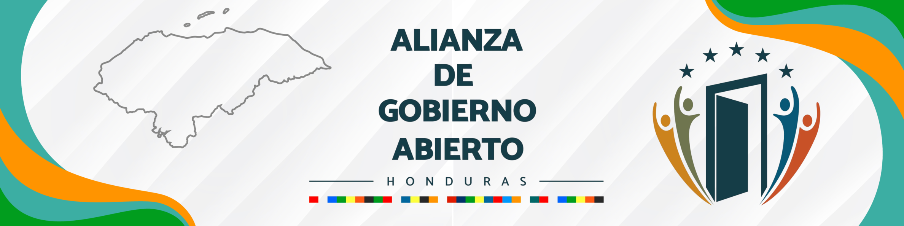

Alianza para el Gobierno Abierto Honduras
Plataforma oficial de transparencia, rendición de cuentas y co-creación ciudadana
Actualidad y Eventos AGAH
Honduras ratifica su adhesión a la Alianza para el Gobierno Abierto Honduras (AGAH)
27 de julio de 2026
Honduras ratificó su adhesión a la Alianza para el Gobierno Abierto Honduras (AGAH), reafirmando su compromiso con el fortalecimiento de la transparencia, la participación ciudadana, la rendición de cuentas y la innovación en la gestión pública.
Leer más →[Título de la próxima convocatoria]
[Fecha y Hora]
Modalidad: [Virtual / Presencial]
Informe del Mecanismo de Revisión Independiente (IRM) / Autoevaluación
[Descripción breve de la publicación]
Descargar PDFParticipación Ciudadana y Control Social
Herramientas directas para incidir, evaluar y vigilar la gestión pública
Consultas Públicas Abiertas
Participa en la discusión y elaboración de borradores normativos, planes y políticas de gobierno abierto.
Ver Consultas ActivasEspacio para Sociedad Civil
Red de acreditación, grupos de trabajo y colaboración entre organizaciones no gubernamentales y academia.
Acceder al Espacio OSCSala de Prensa
Comunicados oficiales, boletines informativos y recursos de prensa sobre los avances de la AGAH.
Ir a la Sala de PrensaAvance y Trazabilidad del Plan de Acción
Monitoreo en tiempo real del grado de cumplimiento de los compromisos asumidos por el Estado y la sociedad civil
[Nombre del Compromiso]
[Institución Responsable]
[Nombre del Compromiso]
[Institución Responsable]